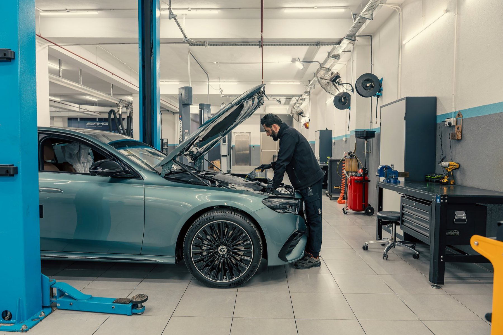
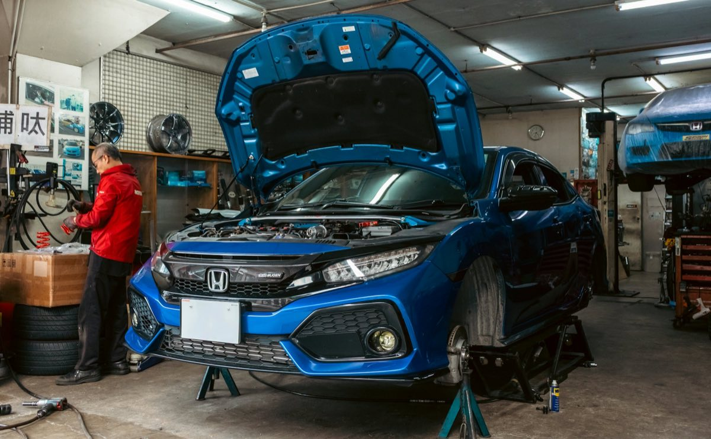
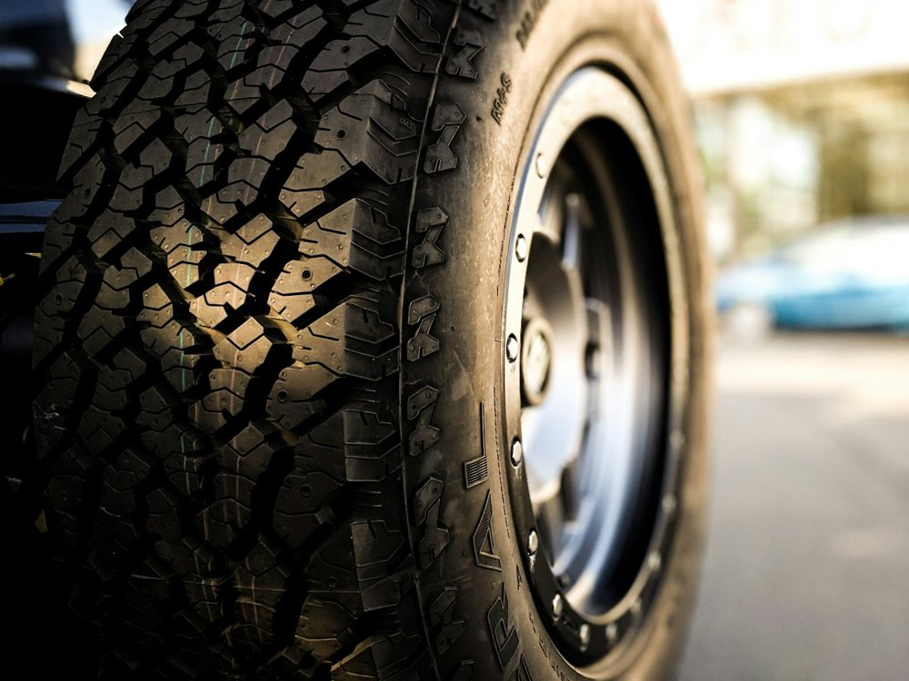
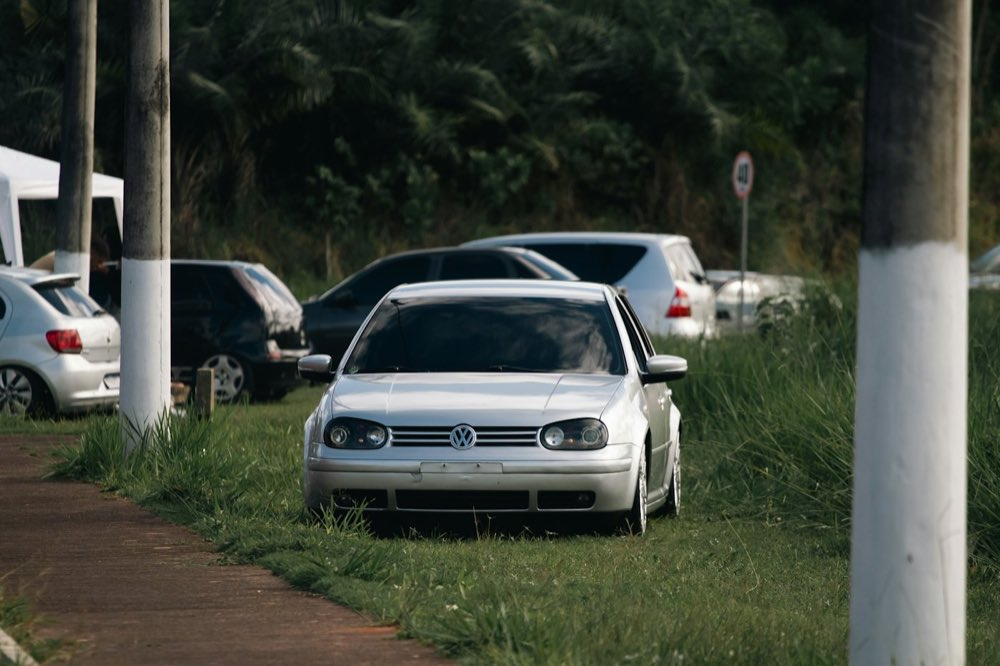
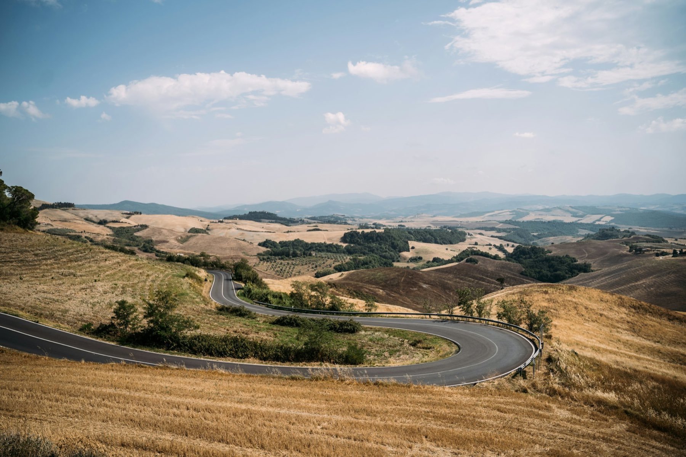

Diagnosi
Errori in centralina, parametri in tempo reale, turbo e frizione. Se il motore ha un problema, prima si ripara.
TexaAutelLaunchBrainbee

Revisioni, officina, gommista, soccorso stradale, preparazioni e vendita auto. Allo scalo di Montecalvo Irpino, da circa 50 anni.
Aperto ora
Revisione, meccanica, gomme. Tutto nello stesso posto.
La guardiamo da ogni lato, prima di dirti cosa fare.
Ogni parte ti porta al servizio giusto.

Scorri
Un posto solo per la tua auto
Dalla revisione alla prossima auto. Tocca un servizio per sapere tutto.
Lavori fatti, scadenze e documenti della tua auto in un garage digitale, da guardare quando vuoi.
Revisioni, officina, gomme e preparazioni in un solo gestionale. Quando scade la revisione, il tagliando o il cambio gomme, te lo ricordiamo noi.
Dimmi quando l'hai fatta l'ultima volta: ti diciamo la scadenza esatta.
Chiama il 350 565 5754: arriviamo con il carro attrezzi negli orari dell'officina. Soccorso attivo ora.
Auto, moto, ciclomotori, tricicli, quadricicli e autocarri fino a 3,5 t. Tariffa di legge, esito subito.
Il controllo obbligatorio che dice se il veicolo è sicuro e in regola. Lo fai sulla nostra linea, allo scalo. Se trova un problema, lo sistemiamo nello stesso posto.
Sì, se la linea è libera. Con la prenotazione non aspetti.
Rischi una multa e il veicolo viene sospeso dalla circolazione finché non fai la revisione.
Sì, dillo quando prenoti: lo facciamo prima, così il veicolo arriva in linea già controllato.
Sì, basta la carta di circolazione.
Tagliandi, freni, frizione, distribuzione e diagnosi. Prima ti diciamo cosa ha l'auto e quanto costa.
Lavoriamo su ogni marca. Ti diciamo cosa va fatto subito, cosa può aspettare e quanto costa. Decidi tu.
Tocca la spia che vedi sul tuo cruscotto: ti diciamo cosa vuol dire e cosa fare.
Olio, filtri e controlli previsti dalla casa. Timbriamo il libretto.
Pastiglie, dischi, liquido.
Se slitta, se il pedale è duro o le marce entrano male.
Cinghia o catena, ai km o agli anni indicati dalla casa.
Leggiamo gli errori della centralina.
Ricarica gas, test batteria, ammortizzatori.
No. Il Regolamento UE 461/2010 permette il tagliando in un'officina indipendente, se si segue il piano della casa con ricambi di qualità equivalente.
Per un tagliando di solito la riconsegniamo in giornata. Per lavori più lunghi ti diamo una data con il preventivo.
Sì: ogni lavoro resta scritto nel gestionale e lo ritrovi nel tuo garage digitale. Quando scadono revisione e tagliando ti avvisiamo noi.
Sì: cruscotto, perdite, un rumore registrato col telefono. Ci aiutano a capire se è urgente.
Vendita, cambio gomme, equilibratura e convergenza. Mandaci la misura, ti diamo il prezzo.
Le gomme sono l'unica cosa che tocca la strada: frenata, tenuta sul bagnato e consumi dipendono da loro.

È scritta sul fianco della gomma. Tocca ogni parte della sigla.
È il limite di legge. Meglio cambiarle prima: sotto 3 mm le estive e sotto 4 mm le invernali frenano molto peggio sul bagnato.
Sulle strade con l'ordinanza servono gomme invernali o catene a bordo. Tra Irpinia e Sannio molte strade ce l'hanno.
Le ultime 4 cifre sono settimana e anno: 2523 vuol dire 25ª settimana del 2023. Dopo 5–6 anni la mescola indurisce.
Con equilibratura, al massimo un'ora.
Sì, d'inverno sono permesse gomme M+S con indice più basso, ma non sotto Q, cioè 160 km/h.
Sì. Misure e data del cambio restano nel gestionale: quando è ora te lo ricordiamo noi.
Con gomme nuove, dopo una botta forte o se la gomma si consuma da un lato solo.
Auto in panne? Ti veniamo a prendere e la portiamo in officina, dove la ripariamo.
Soccorso attivo ora · negli orari dell'officina
Carichiamo l'auto, la portiamo allo scalo e la ripariamo. Niente rimbalzi tra carro attrezzi, officina e gommista.
In autostrada il soccorso lo fanno solo i mezzi autorizzati dal gestore. Fuori dagli orari dell'officina il nostro soccorso non è attivo.
Via, chilometro o un punto di riferimento. Su WhatsApp puoi mandare la posizione.
Modello e targa.
Non parte, fumo, gomma a terra, incidente.
Se le ruote girano o se è bloccata.
Fino a 150 km da Montecalvo Irpino.
No: negli orari dell'officina, lun–ven 8:30–13 e 14:30–19, sabato 8:30–13.
Dipende dalla distanza: te lo diciamo al telefono, prima di partire.
Possiamo farla ripartire sul posto.
Stage 1, 2 e 3, cambio automatico e codifiche. Con gli strumenti dei preparatori.
Leggiamo la centralina, salviamo l'originale e scriviamo una mappa per il tuo motore. Prima lo controlliamo: una preparazione su un motore stanco fa solo danni.
Esempio indicativo. Il guadagno della tua auto lo vedi nei dati registrati prima e dopo.
Gli stessi sistemi delle grandi officine di tuning. Tocca un nome per sapere a cosa serve.
Leggono e scrivono la centralina. Con tre sistemi diversi arriviamo su più auto.
Diagnosi complete su ogni marca, con più strumenti insieme. Prima di toccare la mappa sappiamo come sta il motore.
Chiavi, moduli nuovi e funzioni da attivare.
I nomi citati sono marchi dei rispettivi proprietari.
Errori in centralina, parametri in tempo reale, turbo e frizione. Se il motore ha un problema, prima si ripara.
Leggiamo la centralina dalla presa OBD, al banco o in boot. Il file di serie resta salvato.
Pressione del turbo, iniezione, anticipo e limitatori, scritti per il tuo motore e per come guidi.
Registriamo i dati in marcia e controlliamo i fumi allo scarico. Si corregge finché tutto è nei valori giusti.
Ti diamo i valori prima e dopo. Se vuoi cambiare qualcosa, ritocchiamo la mappa senza farti pagare di nuovo. L'originale resta archiviato.
Con gli stessi strumenti lavoriamo sul cambio, sui consumi, sulle chiavi e sulle centraline guaste.
Cambiate più rapide e limiti di coppia adeguati alla nuova mappa del motore.
Più coppia ai bassi giri, meno scalate e meno carburante. Per chi fa tanti chilometri.
Più forza a pieno carico e in salita, senza tirare le marce.
Attiviamo funzioni che l'auto ha già ma sono spente, e adattiamo i moduli sostituiti.
La cloniamo: copiamo i dati sulla centralina di ricambio e l'auto riparte con i suoi codici.
Chiave persa o di scorta: la programmiamo noi. Serve la carta di circolazione a tuo nome.
Dipende dal motore. Sui turbo, con lo Stage 1, di solito tra il 15 e il 30%. Sugli aspirati il guadagno è piccolo: te lo diciamo prima, così non spendi per niente.
Una mappa fatta bene resta nei limiti dei pezzi. Per questo prima facciamo una diagnosi completa, e dopo controlliamo i dati in marcia. Su un motore con problemi non la facciamo.
Sì. Il file di serie resta salvato: lo rimettiamo quando vuoi, per esempio prima di vendere l'auto.
Uno Stage 1 di solito in giornata. Per Stage 2 e 3 dipende dai pezzi: la data te la diamo con il preventivo.
Di marche da preparatori, per esempio filtri BMC, intercooler Wagner Tuning e frizioni Sachs Performance, o altre in base all'auto. Te li scriviamo nel preventivo, con il prezzo.
La mappa te la ritocchiamo ogni volta che vuoi, senza pagare di nuovo.
Su furgoni e camper sì, diesel e benzina: mandaci modello e motore e ti diciamo subito cosa si può fare. Sulle moto no.
Auto usate controllate e sistemate nella nostra officina, prima di venderle. Sai cosa compri.
Le compriamo alle aste professionali e da privati. Prima di venderle passano dalla nostra officina, e su ogni scheda scriviamo cosa abbiamo fatto.
Dicci cosa cerchi, quanto vuoi spendere e che alimentazione preferisci: ti scriviamo quando arriva quella giusta.
Avvisami quando arriva
ESEMPIO DI SCHEDACosa abbiamo fatto: i lavori in officina. Cosa sapere: difetti e lavori futuri, scritti chiari.
Mandaci modello, anno, km e qualche foto: ti rispondiamo con una proposta.
12 mesi, come previsto per l'usato venduto da un'attività.
Sì. La tua auto la valutiamo come per la vendita: mandaci modello, anno, km e qualche foto.
Per ora no: ci stiamo organizzando.

Contrada Olivara 19, vicino alla stazione ferroviaria. A 20 minuti da Ariano Irpino, 41 da Benevento.
Aperto ora
| Lunedì – venerdì | 8:30–13:00 · 14:30–19:00 |
| Sabato | 8:30–13:00 |
| Domenica | chiuso |
Chi siamo
I clienti di sempre conoscono Tony. Oggi l'officina la porta avanti Adelio, con lo stesso modo di lavorare: dire le cose come stanno e fare il prezzo giusto. ★ 4,7 su Google, 38 recensioni.
Scegli giorno e fascia. L'orario esatto te lo confermiamo su WhatsApp.